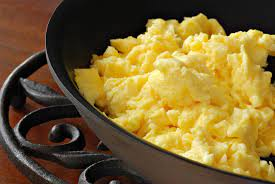

Scrambled Eggs

Below is a basic recipe and step by step instructions to make Scrambled Eggs.
Ingredients
- 2 Large free range eggs
- 6 tbsp single cream or full cream milk
- 1 tbsp of butter
Steps
- Lightly whisk 2 large eggs, 6 tbsp single cream (or full cream milk) and a pinch of salt together until the mixture has just one consistency.
- Heat a small non-stick frying pan for a minute or so, then add the butter and let it melt
Don't allow the butter to brown or it will discolour the eggs.
- Pour in the egg mixture and let it sit, without stirring, for 20 seconds. Stir with a wooden spoon, lifting and folding it over from the bottom of the pan
- Let it sit for another 10 seconds then stir and fold again
- Repeat until the eggs are softly set and slightly runny in places. Remove from the heat and leave for a moment to finish cooking.
- Give it one final stir and then serve up.
Go back to main page.